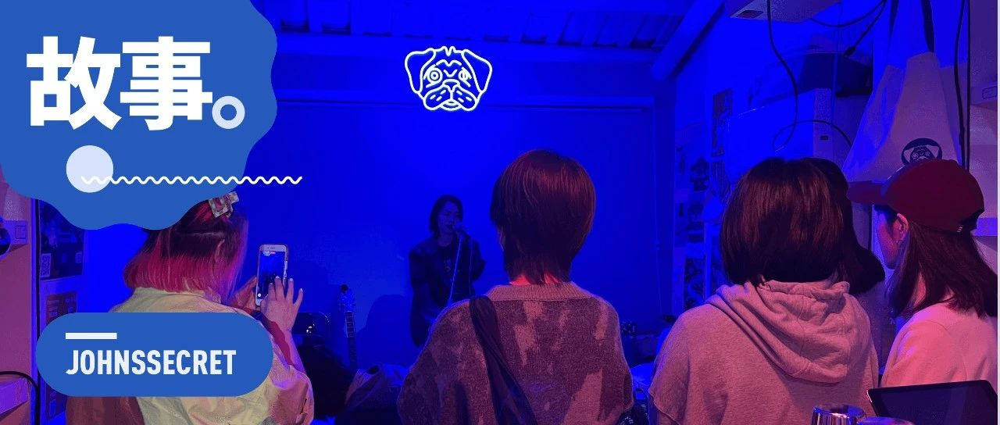

奔三过半，发现还是要一些很小很小很小的事情来变得开心
原创
宛潼
约翰斯库
2023年03月14日 21:04
广东
和你分享三个最近让我非常非常开心的小故事吧。
在搬到荔湾前，我一直在担心一件事情：我的新房东珍姨就住在隔壁栋，是个新中国成立前就出生的老人家，她的孙辈甚至都比我大点，所以总是担心一些沟通不畅或难以解释的事情发生。尽管看房子那天老人家和我们聊天的过程一直都是喜笑颜开，但到了签合同那天，我还是蛮害怕的。
那天大概是这样一个场景，我穿着吊带连衣裙走进中介的会议室里的时候，珍姨一家人一已经在那等了我一会。三个看着像是我外公外婆和我妈那样年纪的人坐在一侧，而我则被中介引导坐在桌子的另一侧。
刚租下来时候的样子
不一会，中介表示自己要出去打印合同，可以让我们先聊聊。但是那时候我的感受怎么讲呢，像是个做错了事情被拉去训话的小朋友，面对和自己跨越了不止一个代际的三个人，大概就是如坐针毡吧。
倒是珍姨的女儿先开口了，看了看我的粉色头发，问我是什么工作。我说，我算是个搞创作的吧，自由撰稿人，给一些平台写稿子，偶尔也拍点视频。
她说，好，我了解了，就是我妈咪说对你们印象很不错，所以决定把房子租给你们。
我和她短暂的对话刚结束，珍姨就接过我俩的话笑着对我和她女儿说，「哎呀，我真系看了好多来看房的人，但我就是觉得阿豪很有礼貌而且很会讲话，和她聊天我很开心，所以我对她印象真的不错，愿意把房子租给她。」
啊，这个过时的名字确实让人有种被「创」的感觉。某种层面来讲，我现在要改变它好难，而且珍姨一家人很可能也不懂这些。但珍姨的笑和平易近人确实打动了我，而且她在我看来有着许多人所不拥有的包容：不会单纯以面貌取人 —— 而这或许还是大部分人所缺失的。
总之签合同这件事情很快就搞定了，我和珍姨还有她老伴一起走回小区的路上，又聊起了一些买菜和出行的话题。于是他们二老轮番热情地给我指路，告诉我市场在哪，怎样走路更方便，哪家菜馆好吃。
厨房
我们搬过来之后有一天，珍姨说要来看看之前刷墙师傅的修墙反馈。见到她的时候，她还是那身熟悉的红色运动外衣和小挎包，还有标志性爽朗的笑声。我们在珍姨临走时跟她讲，我们也不会对房子做什么破坏性的改装，如果担心我们搞破坏，那就时不时过来看看。但她倒是看得开：
没事的，我相信你们不会乱搞。你们也有你们自己的生活，我就少点来打扰你们了。
又想到搬家那天她还帮我们拉东西、借小推车，突然觉得想哭。
从出生至今，我只见过我的外公，后来他在我 16 岁的时候走了，从此我就再也没有了祖辈的亲人。我只记得我外公在病痛前也喜欢笑，喜欢给人讲讲过去的故事，喜欢练练书法。他会去给县城里的小朋友们讲过去的革命故事，也能开心地跟我们去生日 KTV，笑着被我们抹奶油到脸上。
如果他们都还在的话，也许我的生活和选择……应该能变得开心且随性一些吧。
在搬到荔湾之后，有天晚上和室友去新家附近的大家福美食店吃了个鸡煲。只是等待的过程确实漫长，我俩都在无聊地玩手机。
终于上菜了，上菜的人是个和我妈年纪相仿的阿姨。阿姨在听到我的声音之后表现出了一丝好奇，于是笑着问我说，你是男孩还是女孩呀？
一般来说遇到这种情况，我过去都会不停审视自己，乃至于陷入短暂的焦虑之中。只是经历得多了之后，就慢慢学会分辨这些问题的动机，如果不是恶意的，那就搪塞过去好了。
我知道阿姨不是那种故意来找茬，或者是把我当做「那个人是男是女」的无聊打赌目标的人，只是在世界另一头，发生了一些她没有经历过的也未曾了解的事情。所以我便笑着回应她，你觉得呢？
阿姨笑了笑，端着菜盘离开了。我只顾着这家鸡煲真的好吃，已经把这件事给忘了。反正自己已经不追求要多么像个「完美的女性」了，要是老在意这种误解，那我得过得多难受。
真！的！很！好！吃！
但没想到我正吃着欢快的时候，我的室友突然给我来了这么一句话：
我觉得那个阿姨好没有礼貌啊，她问你这些问题之后我都不想理她。
我一下被 shock 到了，不敢相信这句话竟然是出自我的直男室友。当我表达了这种惊讶和欣慰之后，他说，本来就是这样啊，你怎么过是你的选择，关她什么事哦。
那一晚我简直对他刮目相看。不过后来思考了一下也是，他已经和我合租了两年多，除了有时候吐槽我不喜欢搞卫生忘记洗碗之外，从来没有对我的生活方式横加干预或指责。
所以那时候我也决定，要好好包容一些他偶尔给我倒的一些中年危机苦水，嘿嘿。而且毕竟这是他家庭的原因而不是他的原因，倾诉和宣泄总归是需要的。
他囤的气泡水
然后在我们搬来不久之后，有一天他敲我工作室门，笑着走进来说，「诶宛潼，以后我们上厕所都坐着吧。我看到有人讲说这样更加卫生而且更好清理，我想了想觉得也是。」
我又一次被我的直男室友惊到了，突然觉得他好可爱。
其实让我觉得惊讶的点并非是这些行为，而是能感受到他真的不在意一些针对男性的规训。在一定程度上来说，摆脱这种规训也意味着性别更加平等，而且也能让我们的生活和选择更加自由。
最近开始工作了，不过是兼职，在广州 nugget 小块儿的小酒吧里做 bartender。最初它吸引我的地方是这里会组织各种各样的活动，而且都还蛮好玩的，所以在一次拜访之后就通过朋友介绍加入了他们。
加入 nugget 之后不就就是妇女节，所以店长 Celeste 和我便开始策划那天的特别活动。
结果到了妇女节那天，Celeste 由于喉咙不舒服无法主持了，这个重任就落在了我的肩上。老实说，大学毕业之后，我就已经好多年没有在这种公共场合下主持一个活动，所以一开始多多少少有些紧张。
蛮开心的是，那天来了好多人，而且即便是妇女节的活动，也有一些男生来参与了，这是让我感到很欣慰的一点。不过让我印象最深的画面，是来自一个陌生朋友的拥抱。
也许是紧张，也许是这些年的敏感，让我变得更加容易自卑。所以在和大家分享了自己的故事之后，气氛忽然显得有些沉重和安静，让我不知所措。如果大家在思考问题到也还好，最怕的就是自己说的话不合时宜，感动了自己却让别人觉得尴尬。
忽然，坐在门口的那个女孩起身朝我走来，对我们大声地说：
生活已经很沉重了啊，就不要再审视自己了，你已经很棒了，不要再去在意别人怎么想啦。
然后，她走到我身边，给了我一个大大的拥抱。
那时候我整个人有点恍惚，还没回过神来就被她抱住了，过了一会才把手搭在了她背上。而我的目光反应速度更加迟滞，呆呆地望着坐在门口的另一个朋友 Mao，却看到了她姨母般的笑和温柔。
后来才觉察到，她的肩膀刚好顶到了我的嘴唇，这样我的口红
或许
还在她的外套上留下了一个唇印。
Celeste 画的海报，右下角那个人是她
讨论的环节结束后，我和 Celeste 给大家发了纸和画笔，邀请大家给场内或场外的任何一位女性朋友画一张贺卡，表达自己的妇女节祝福。意想不到的是，自己竟然收获了四张。
那天晚上觉得自己身体能量耗尽，11 点营业结束关店之后，去明记咣咣吃了两碟肠粉。有趣的是，我饥饿的身体却感觉不到一丝疲惫，且有种前所未有的感动和柔软 —— 也许是在大家构建的这个安全同温层中，选择以自己喜欢的方式去生活，并不是一件代价如此残酷的事情了。
好了，三个最近发生的小故事讲完了。祝你也可以有许许多多这种很小很小很小但却又很柔软的事情来变得开心。
哦对啦，如果有时间的话，欢迎来我兼职的酒吧找我玩，或是这周末来永庆坊一起看演出吧。
点击图片可以跳转查看详情
修改于